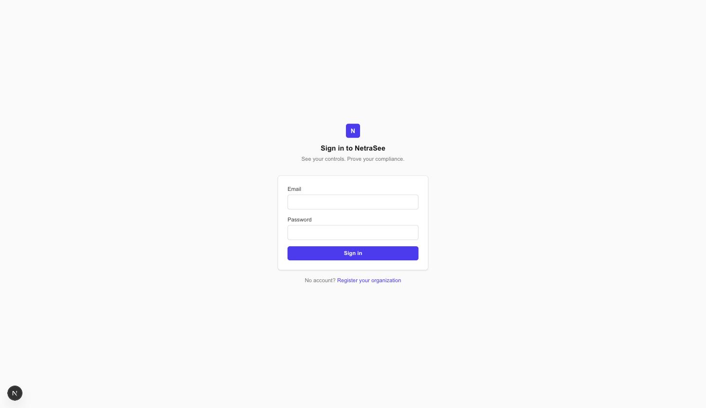
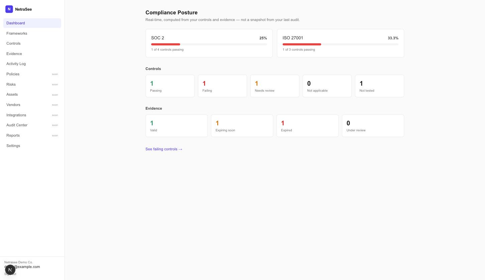
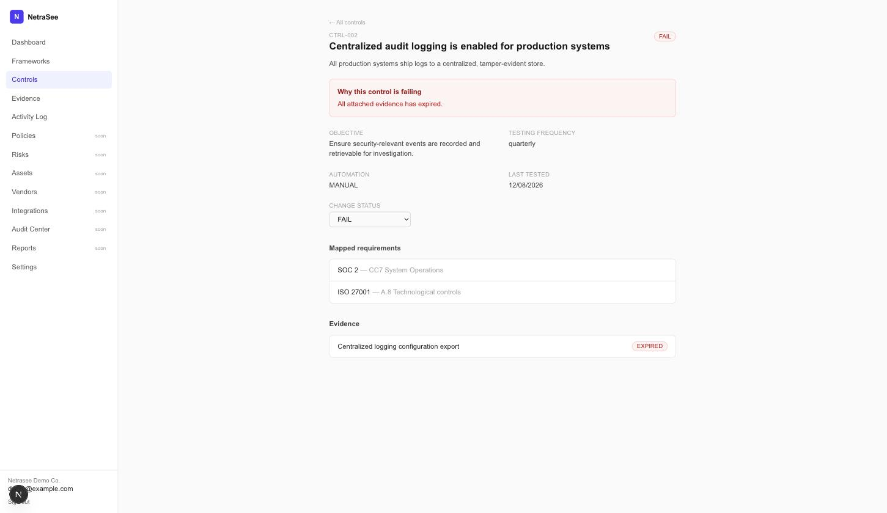

NetraSee computes your compliance posture live, from your actual controls and evidence. If a piece of evidence expires or a control fails, the dashboard reflects it the moment it happens — not whenever someone remembers to update a spreadsheet.



Every framework is a set of requirements. Every requirement is satisfied by one or more controls. Every control is proven by evidence, which expires. Change any of those, and every number recalculates from current state. This one flow is what v1 was built to get right, end to end, with real seeded data — not a mockup.
| Area | Status |
|---|---|
| Auth — session cookies, argon2id, CSRF | Built |
| Multi-tenant orgs, 3 roles (Owner / Admin / Viewer) | Built |
| Frameworks + requirements, live progress | Built — SOC 2, ISO 27001 |
| Controls, reusable across frameworks | Built |
| Evidence — upload, expiry-aware status | Built |
| Append-only audit log | Built |
| Policies / Risks / Assets / Vendors / Integrations / Audit Center / Reports | Roadmap |
git clone https://github.com/ImGauravbhosale/NetraSee.git cd NetraSee docker compose up docker compose exec backend uv run python scripts/seed_demo.py
Then open localhost:3000/login —
demo login demo@example.com /
netrasee-demo-1234.
Full setup (including local dev without Docker) is in the
README.
Every org-scoped endpoint checks membership before anything else, and returns 404 — not 403 — for non-members, so a non-member can't confirm the org even exists.
HttpOnly cookie backed by a server-side sessions table with a hashed token — real logout and revocation, not just token expiry.
An Admin can never grant Owner. Only an existing Owner can grant Owner — enforced server-side.
Extension allow-list, size cap, SHA-256 checksum, and a server-generated filename — never the client-supplied one.